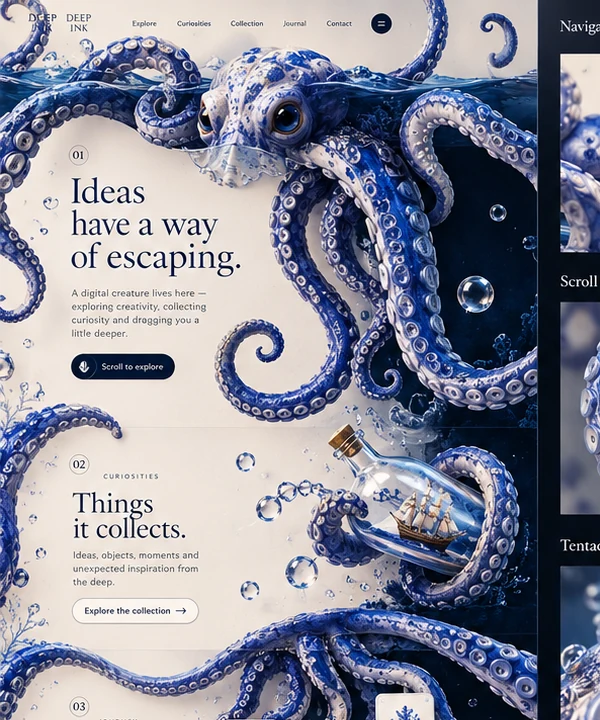

Deep Ink
An original porcelain-blue illustration and two approved motion studies. This is artwork and motion, not a fabricated multi-route app.
Ideas have a way of escaping.

Deep Ink gives curiosity a character. A porcelain-blue octopus winds through editorial content, guiding attention to new sections, menus and moments below the surface. The creature is an interaction device rather than a decorative logo, which is why the two scroll studies matter: they show the idea behaving, not just existing.
The visual language combines pale porcelain, intense cobalt, underwater depth and controlled editorial typography. Concept 01 keeps the ivory page light so the creature reads as an illustration; Concept 02 inverts the same world into deep blue so the sea becomes the page.

These are the two approved originals, not a camera pan invented around a still. Each player reassembles its approved MP4 from the archived parts stored in this repository, plays it here, and can hand you the untouched file. Players load lazily as you scroll so the reading experience comes first.
Concept 01 · Wonders Beneath the Surface
Plate 03 / 1080 x 1080 · 18 s · full-bleed scroll study · ivory
Archived original, loading when this section scrolls into view.
Concept 02 · Ideas have a way of escaping
Plate 04 / 1080 x 1920 · 18 s · full-bleed scroll study · deep blue
Archived original, loading when this section scrolls into view.
Together the two originals are about 13 MB. If a browser cannot fetch the archive, for example when a page is opened straight from disk instead of over http, use the standalone video pages linked below; they restore the same files and keep a download button.
Approved designs are the source of truth, so nothing here is a re-render. The approved boards are shown as they were approved, and the approved motion studies are restored from their archived bytes rather than approximated. Later simplified 3D octopus variants were not approved replacements and are not used anywhere on this page.
An original porcelain-blue illustration and two approved motion studies. This is artwork and motion, not a fabricated multi-route app.
The original artwork, its colour language and composition remain untouched. These are real presentation pages, not AI-generated replacements.
View the actual presentation on a laptop-width and a phone-width screen, then open the original medium at full size.